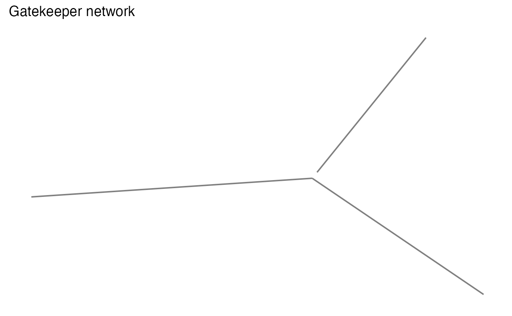
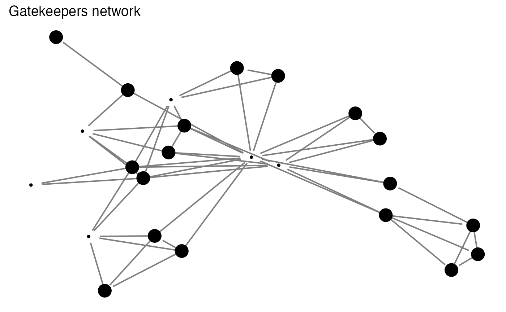

exposomics.Rmd
library(enet)
library(igraph)
#>
#> Attaching package: 'igraph'
#> The following objects are masked from 'package:stats':
#>
#> decompose, spectrum
#> The following object is masked from 'package:base':
#>
#> union
library(ggnetwork)
#> Loading required package: ggplot2
library(genefilter)
data("asthma")
data("expo")
data("meta")Exposomics study try to evaluate the totality of human environmental exposures on health conditions. It’s not only involved in multiple exposures and multiple health outcomes, but also need other omics studies to support the relationships between exposures and health outcomes. Network analysis should be one of the best choices to describe relationship among omics. The purpose of enet package is to provide the tools to visualize network and extract certain structures for exposomics. The first application is gatekeeper discovery.
Gatekeeper is defined as the molecular with has a mediation role between exposure(s) and other molecular. The association between gatekeepers and exposures could be generated from linear regression or other machine learning algorithms. The relationships among molecular could be built on correlation network analysis. However, as long as certain statistics could be used to describe relationship among molecular or between molecular and exposures, it’s should be fine to use such concept.
Here we will use a subset data from Exposome Data Challenge 2021 for demonstration purpose. The details of this dataset can be found online. Here we will use 177 serum metabolites as the mediation between 7 selected exposures and health outcome(asthma or not) from 1198 samples.
mnets <- getmmnet(exp(meta))
#> 9 metabolites correlation network clusters found
#> 155 out of 177 metabolites have no correlation with other metabolites
net <- graph_from_data_frame(mnets$net,directed = F)
V(net)$membership <- components(net)$membership
n <- ggnetwork(net)
ggplot(n, aes(x = x, y = y, xend = xend, yend = yend)) +
geom_edges(color = "grey50",size=0.7) +
geom_nodes(aes(color = as.factor(membership))) +
guides(color=F,size=F) +
ggtitle('Serum Metabolites network') +
theme_blank()
#> Warning: `guides(<scale> = FALSE)` is deprecated. Please use `guides(<scale> =
#> "none")` instead.Here we could find 9 metabolites correlation network clusters.
re <- getgk(exp(meta),expo)
#> 9 metabolites correlation network clusters found
#> 155 out of 177 metabolites have no correlation with other metabolites
#> 18 peaks were involved.
#> 14 peaks could be gatekeepers.Here we can find most of the metabolites are associated with multiple exposures and 14 of those metabolites can be defined as gatekeepers. The returned object is a list with three elements: me contains the table of associated metabolites and exposures, data contains a list with every gatekeepers’ network and metaexp contain the networks of all of the gatekeepers.
# check the table
re$me
#>
#> hs_as_c_Log2 hs_co_c_Log2 hs_cs_c_Log2 hs_cu_c_Log2
#> log.C10 1 0 1 0
#> log.C14.1 0 0 1 0
#> log.C16.1 1 0 1 0
#> log.C8 1 0 1 0
#> log.Ile 0 0 0 1
#> log.Leu 0 0 1 1
#> log.lysoPC.a.C24.0 0 0 1 0
#> log.lysoPC.a.C28.1 0 0 1 0
#> log.PC.aa.C38.6 1 1 1 1
#> log.PC.aa.C40.6 1 1 1 1
#> log.PC.ae.C38.5 0 0 1 0
#> log.SM.C18.0 0 0 1 0
#> log.SM.C18.1 0 0 1 0
#> log.Val 0 0 1 1
#>
#> hs_sumDEHP_cadj_Log2 hs_sumPCBs5_cadj_Log2
#> log.C10 0 0
#> log.C14.1 1 1
#> log.C16.1 1 1
#> log.C8 0 0
#> log.Ile 0 0
#> log.Leu 0 0
#> log.lysoPC.a.C24.0 1 0
#> log.lysoPC.a.C28.1 1 0
#> log.PC.aa.C38.6 1 1
#> log.PC.aa.C40.6 1 1
#> log.PC.ae.C38.5 0 1
#> log.SM.C18.0 1 0
#> log.SM.C18.1 1 0
#> log.Val 0 0
# check the individual network
n <- ggnetwork(re$data[[1]])
ggplot(n, aes(x = x, y = y, xend = xend, yend = yend)) +
geom_edges(color = "grey50",size=0.7) +
guides(color=F,size=F) +
ggtitle('Gatekeeper network') +
theme_blank()
#> Warning: `guides(<scale> = FALSE)` is deprecated. Please use `guides(<scale> =
#> "none")` instead.
# check the network for all gatekeeper
n <- ggnetwork(re$metaexp)
ggplot(n, aes(x = x, y = y, xend = xend, yend = yend)) +
geom_edges(color = "grey50",size=0.7) +
geom_nodes(aes(size = ifelse(vertex.names %in% colnames(re$me),0,1))) +
guides(color=F,size=F) +
ggtitle('Gatekeepers network') +
theme_blank()
#> Warning: `guides(<scale> = FALSE)` is deprecated. Please use `guides(<scale> =
#> "none")` instead.
metagk <- meta[match(rownames(re$me),rownames(meta)),]
re2 <- rowttests(metagk,factor(asthma))
re2
#> statistic dm p.value
#> log.C10 1.8753954 0.066032691 0.06098182
#> log.C14.1 2.5633914 0.145761799 0.01048693
#> log.C16.1 1.8361402 0.047445761 0.06658503
#> log.C8 1.3609328 0.034279370 0.17379130
#> log.Ile 1.7728963 0.066225737 0.07650037
#> log.Leu 1.5129675 0.051428112 0.13055211
#> log.lysoPC.a.C24.0 0.4656238 0.016894581 0.64156955
#> log.lysoPC.a.C28.1 0.6649800 0.023563895 0.50619149
#> log.PC.aa.C38.6 0.3396100 0.012525738 0.73420991
#> log.PC.aa.C40.6 -0.2529167 -0.009685914 0.80037608
#> log.PC.ae.C38.5 2.0828567 0.053962709 0.03747632
#> log.SM.C18.0 0.8211743 0.020921923 0.41171065
#> log.SM.C18.1 0.7766756 0.019275111 0.43750374
#> log.Val 2.2236925 0.060544251 0.02635536Here we can find two gatekeepers might mediate the influnces from multiple exposures to asthma condition.